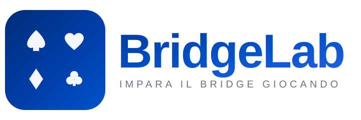

Le regole per cominciare a giocare

Quattro giocatori, due coppie: Nord-Sud contro Est-Ovest.
Il compagno siede di fronte.
13 carte a testa
Attacco = la prima carta giocata
Presa = l'insieme delle 4 carte giocate, una per giocatore
Dopo ogni presa gioca per primo chi l'ha vinta
Rispondere «a colore»
si gioca una carta del seme giocato per primo, se la si ha
per un totale di 13 prese
Ovest attacca, gli altri rispondono a cuori. Sud vince la presa con il Re…
…e gioca la prima carta della presa successiva. Est non ha fiori e «scarta» un quadri: vince la Dama di Ovest.
Tre smazzate libere